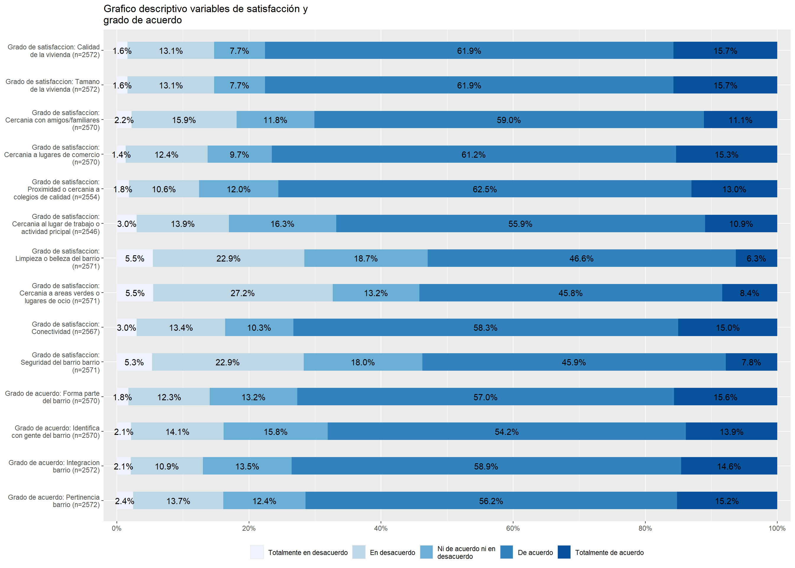
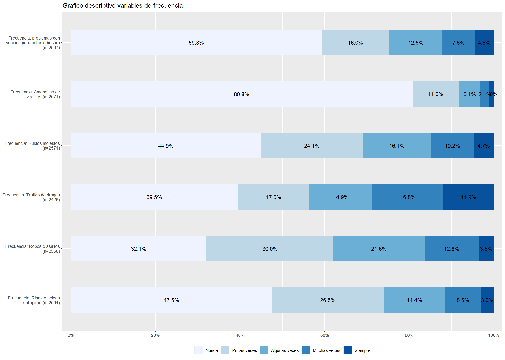

pacman::p_load(sjlabelled,
dplyr,
stargazer,
sjmisc,
summarytools,
kableExtra,
sjPlot,
corrplot,
sessioninfo,
ggplot2,
knitr) Trabajo 1: Reporte descriptivo en Quarto
Determinantes residenciales que motivan la decision del cambio de hogar en Chile
1. Introducción
La satisfacción residencial se entiende como un componente clave y muy influyentes en como las personas experimentan y valoran su entorno inmediato, esta satisfacción no se construye de forma aislada si no que es en un tramado de elementos físicos-materiales y sociales, “Es un concepto multi dimensional, ya que incluye factores físicos, sociales y vecinales” (Martínez Ibarra & Ibarra Salazar, 2017).
Cuando hablamos de elementos físicos-materiales que poseen los entornos residenciales, nos referimos a aspectos como la presencia de áreas verde, la conectividad, la limpieza del espacio público, entre otros factores materiales, centrarse únicamente en estas dimensiones no nos permitiría comprender de forma completa la experiencia residencial es por eso que consideramos muy importante tener en cuenta aquellos aspectos sociales como la identificación al barrio, las relaciones con los individuos, la percepción de seguridad, entre otros. La sociología urbana ha señalado como la insatisfacción con el entorno residencial puede reflejar tensiones vinculadas a la exclusión social, la percepción de seguridad o la baja calidad de servicios urbanos (Sabatini,2009)
El estudiar las determinantes que conllevarían a un cambio de hogar nos demuestra cómo se expresan fenómenos que van más allá de un cambio de hogar, entenderemos como determinantes de satisfacción a partir de los siguientes 4 aspectos planteado por los autores mexicanos a partir de la encuesta de satisfacción residencial: la satisfacción depende de cuatro características: 1) físicas de la construcción, 2) espaciales, funcionales y formales, 3) ambientales, y 4) adaptaciones y transformaciones (Martínez Ibarra & Ibarra Salazar, 2017). La decisión de cambiar de vivienda no es solo un hecho individual, sino que también es una respuesta a ciertas condiciones estructurales que alteran los modos de vida y las rutinas de las personas. Además, es fundamental no dejar de lado el contexto chileno, en donde el acceso a la vivienda se encuentra altamente mercantilizado, estos elevados costos presentan una barrera significativa, sobre todo para el sector de los bajos recursos, que condiciona las posibilidades de elección y movilidad residencial
El concepto central que se va a investigar es la satisfacción residencial, en donde la entenderemos como una evaluación subjetiva que realiza el individuo sobre sus condiciones de su vivienda y el entorno inmediato en el cual se encuentra, tanto en lo social como en lo físico, se tendrá por objetivo estudiar cómo es que esta satisfacción generada por estas condiciones incide en la decisión de un cambio de hogar. Tal y como señala (Amérigo, et al, 2014) la satisfacción residencial no depende únicamente de la calidad objetiva de la vivienda, sino también de factores subjetivos, como la percepción del entorno y el grado de apego o identidad con el lugar
1.1 Hipotesis
La hipótesis central que plantearemos es que se espera que a medida que disminuya la satisfacción residencial tanto en sus aspectos físicos y sociales, aumente la probabilidad que una persona decida cambiarse de hogar. esta relación parte del supuesto que el grado que la persona se siente satisfecha tanto en lo físico-material como en lo social, actúan como indicadores claves en la influencia sobre la decisión que tengan las personas a querer cambiarse de hogar.
2. Preparación
2.1. Instalación de paquetes:
2.2 Descarga de la base de datos
Nuestra base de datos con la que nos dispondriamos a trabajar seria la “Encuesta Longitudinal Social de Chile” realizada por el COES (Centro de Estudios de Conflicto y Cohesión social).
Y esta base la descargamos desde internet con el siguiente link:
load(url("https://dataverse.harvard.edu/api/access/datafile/7245118"))2.3 Exploración de la base de datos
Esto lo realizamos con el fin de saber las dimensiones de la base de datos en cuanto a el numero de observaciones que esta tendria y el numero de variables de las que dispondria.
Para aquello aplicamos el siguiente codigo:
dim(elsoc_long_2016_2022.2) [1] 18035 750Podemos apreciar que la base de datos cuenta con un total de 18035 observaciones que fueron realizadas desde el año 2016 al año 2022 y un total de 750 variables.
2.4 Seleccion de variables
Para seleccionar nuestras variables utilizaremos el comando find_var, este comando nos permitiria localizar variables en la base de datos a partir de una palabra que sea de nuestro interes.
Dichas palabras que utilizaremos seria: barrio y satisfacción.
Palabra “Satisfaccion”
find_var(data = elsoc_long_2016_2022.2, "satisfaccion") col.nr var.name
1 159 t06_01
2 160 t06_02
3 161 t06_03
4 162 t06_04
5 163 t06_05
6 164 t06_06
7 165 t06_07
8 166 t06_08
9 167 t07_01
10 168 t07_02
11 395 d27_01
12 397 d27_03
var.label
1 Grado de satisfaccion: Seguridad del barrio
2 Grado de satisfaccion: Conectividad
3 Grado de satisfaccion: Areas verdes y de recreacion disponibles
4 Grado de satisfaccion: Limpieza y belleza del barrio
5 Grado de satisfaccion: Proximidad al lugar de actividad principal
6 Grado de satisfaccion: Proximidad a colegios de buena calidad
7 Grado de satisfaccion: Proximidad a areas de comercio
8 Grado de satisfaccion: Proximidad con familiares y/o amigos cercanos
9 Grado de satisfaccion: Tamannio de la vivienda
10 Grado de satisfaccion: Calidad de la vivienda
11 Grado de acuerdo: Insatisfaccion al compararme con otros como yo
12 Grado de acuerdo: Insatisfaccion al compararme con clases mas altasPalabra “Barrio”
find_var(data = elsoc_long_2016_2022.2,"barrio") col.nr var.name
1 90 r13_barrio_01
2 100 r13_barrio_02
3 110 r13_barrio_03
4 120 r13_barrio_04
5 130 r13_barrio_05
6 143 t02_01
7 144 t02_02
8 145 t02_03
9 146 t02_04
10 147 t03_01
11 148 t03_02
12 149 t03_03
13 150 t03_04
14 151 t04_01
15 152 t04_02
16 155 t04_05
17 156 t04_06
18 157 t04_07
19 159 t06_01
20 162 t06_04
21 169 t08
22 173 t10
23 176 t11_03
24 183 t15
25 184 t16
26 185 t17
27 382 d24_02
28 595 m34_03
var.label
1 Confidente 1: Mismo vecindario
2 Confidente 2: Mismo vecindario
3 Confidente 3: Mismo vecindario
4 Confidente 4: Mismo vecindario
5 Confidente 5: Mismo vecindario
6 Grado de acuerdo: Este es el barrio ideal para mi
7 Grado de acuerdo: Me siento integrado/a en este barrio
8 Grado de acuerdo: Me identifico con la gente de este barrio
9 Grado de acuerdo: Este barrio es parte de mi
10 Grado de acuerdo: En este barrio es facil hacer amigos
11 Grado de acuerdo: La gente en este barrio es sociable
12 Grado de acuerdo: La gente en este barrio es cordial
13 Grado de acuerdo: La gente en este barrio es colaboradora
14 Grado de acuerdo: Me agrada el cambio en aspecto del barrio
15 Grado de acuerdo: Encarecimiento de bienes y servicios en el barrio
16 Grado de acuerdo: Abandono de vecinos y/o amigos del barrio
17 Grado de acuerdo: Llegada de residentes desagradables al barrio
18 Grado de acuerdo: Surgimiento de actividades desagradables en el barrio
19 Grado de satisfaccion: Seguridad del barrio
20 Grado de satisfaccion: Limpieza y belleza del barrio
21 Percepcion de evaluacion del barrio
22 Percepcion de seguridad del barrio
23 Frecuencia: Amenazas, insultos u ofensas de vecinos del barrio
24 Nivel de dannio que ha ocurrido en su barrio
25 Justificacion de violencia: Personas dannien bienes en su barrio
26 Justificacion de violencia: Personas dannien bienes en otros barrios
27 Grado de acuerdo: Poderosos indolentes con problemas graves en mi barrio
28 Tiempo residiendo en barrioA partir de estas palabras podemos seleccionar que variables utilizar y tambien a partir de estas variables tambien podemos hacernos una idea de en que modulo podrian haber variables similares de nuestro interes en caso de querer localizarlas/emplearlas.
2.5 Creacion de una sub-base con nuestras variables de interes
Algunas de estas variables se obtivieron a partir del uso del comando find:var, las otras fueron buscadas de forma manual el el logro de codigos utilizando de referencia las variables obtenidas por find_var.
Esta sub-base contempla la selección de las observaciones correspondientes a la Ola 6 que seria los datos del año 2022.
proc_data_2022 <- elsoc_long_2016_2022.2 %>% filter(ola=="6") %>%
select(Barrio_ideal=t02_01,
Integra_barrio=t02_02,
Identi_gente=t02_03,
Parte_barrio=t02_04,
Cambio_hogar=t05,
Satis_seguridad=t06_01,
Satis_conectividad=t06_02,
Satis_area_ocio=t06_03,
Satis_barrio_limp=t06_04,
Satis_cerca_trab=t06_05,
Satis_cerca_coleg=t06_06,
Satis_cerca_comerc=t06_07,
Satis_cerca_amig_fami=t06_08,
Satis_tamano_viv=t07_01,
Satis_calidad_viv=t07_02,
Frecue_peleas_calle=t09_01,
Frecue_robo=t09_02,
Frecue_trafico=t09_03,
Frecue_ruido_moles=t11_01,
Frecue_amenzas=t11_03,
Frecue_vecino_sucio=t11_04
)2.5.1 Tratamiento de los casos perdidos
Eliminamos los datos perdidos correspondientes a NS/NR (No sabe/No responde) y que estan numeradas como -999, -888 y -777 con el siguiente codigo:
proc_data_2022 <- proc_data_2022 %>% sjlabelled::set_na(., na = c(-999, -888, -777, -666))Con el codigo anterior aquellos valores de -999, -888 y -777 pasaran a ser designados como NA’s
2.5.2 Guardamos de la sub-base de datos realizada
Esta base de datos pasaria a estar alojada en la carpeta denominada imput
save(proc_data_2022, file = "C:/Users/jmuno/OneDrive/Desktop/OFC_R/Ojeda-Tognarelli-Trabajo-1/imput/proc_data_2022.RData")2.6 Asignación de etiquetas a las variables
asigamos etiquetas a cada una de las variables que disponga la sub-base que hemos realizado, con estas etiquetas asignadas se facilitaria su identificación para futuros ejercicios.
De momento estas etiquetas constarian en su primera parte de una breve descripción de aquello que busca medir y en la segunda parte de una breve descripcion del contenido de la pregunta
proc_data_2022$Barrio_ideal <- set_label(x = proc_data_2022$Barrio_ideal,label = "Grado de acuerdo: Pertinencia barrio")
proc_data_2022$Integra_barrio <- set_label(x = proc_data_2022$Integra_barrio,label = "Grado de acuerdo: Integracion barrio")
proc_data_2022$Identi_gente <- set_label(x = proc_data_2022$Identi_gente,label = "Grado de acuerdo: Identifica con gente del barrio")
proc_data_2022$Parte_barrio <- set_label(x = proc_data_2022$Parte_barrio,label = "Grado de acuerdo: Forma parte del barrio")
proc_data_2022$Cambio_hogar <- set_label(x = proc_data_2022$Cambio_hogar,label = "Tiene planteado cambio de casa u hogar")
proc_data_2022$Satis_seguridad <- set_label(x = proc_data_2022$Satis_seguridad,label = "Grado de satisfaccion: Seguridad del barrio barrio")
proc_data_2022$Satis_area_ocio <- set_label(x = proc_data_2022$Satis_area_ocio,label = "Grado de satisfaccion: Cercania a areas verdes o lugares de ocio")
proc_data_2022$Satis_barrio_limp <- set_label(x = proc_data_2022$Satis_barrio_limp,label = "Grado de satisfaccion: Limpieza o belleza del barrio")
proc_data_2022$Satis_cerca_trab <- set_label(x = proc_data_2022$Satis_cerca_trab,label = "Grado de satisfaccion: Cercania al lugar de trabajo o actividad pricipal")
proc_data_2022$Satis_cerca_coleg <- set_label(x = proc_data_2022$Satis_cerca_coleg,label = "Grado de satisfaccion: Proximidad o cercania a colegios de calidad")
proc_data_2022$Satis_cerca_comerc <- set_label(x = proc_data_2022$Satis_cerca_comerc,label = "Grado de satisfaccion: Cercania a lugares de comercio")
proc_data_2022$Satis_cerca_amig_fami <- set_label(x = proc_data_2022$Satis_cerca_amig_fami,label = "Grado de satisfaccion: Cercania con amigos/familiares")
proc_data_2022$Satis_tamano_viv <- set_label(x = proc_data_2022$Satis_tamano_viv,label = "Grado de satisfaccion: Tamano de la vivienda")
proc_data_2022$Satis_calidad_viv <- set_label(x = proc_data_2022$Satis_tamano_viv,label = "Grado de satisfaccion: Calidad de la vivienda")
proc_data_2022$Frecue_peleas_calle <- set_label(x = proc_data_2022$Frecue_peleas_calle,label = "Frecuencia: Rinas o peleas callejeras")
proc_data_2022$Frecue_robo <- set_label(x = proc_data_2022$Frecue_robo,label = "Frecuencia: Robos o asaltos")
proc_data_2022$Frecue_trafico <- set_label(x = proc_data_2022$Frecue_trafico,label = "Frecuencia: Trafico de drogas")
proc_data_2022$Frecue_ruido_moles <- set_label(x = proc_data_2022$Frecue_ruido_moles,label = "Frecuencia: Ruidos molestos")
proc_data_2022$Frecue_amenzas <- set_label(x = proc_data_2022$Frecue_amenzas,label = "Frecuencia: Amenazas de vecinos")
proc_data_2022$Frecue_vecino_sucio <- set_label(x = proc_data_2022$Frecue_vecino_sucio,label = "Frecuencia: problemas con vecinos para botar la basura")
get_label(proc_data_2022$Barrio_ideal)[1] "Grado de acuerdo: Pertinencia barrio"get_label(proc_data_2022$Integra_barrio)[1] "Grado de acuerdo: Integracion barrio"get_label(proc_data_2022$Identi_gente)[1] "Grado de acuerdo: Identifica con gente del barrio"get_label(proc_data_2022$Parte_barrio)[1] "Grado de acuerdo: Forma parte del barrio"get_label(proc_data_2022$Cambio_hogar)[1] "Tiene planteado cambio de casa u hogar"get_label(proc_data_2022$Satis_seguridad)[1] "Grado de satisfaccion: Seguridad del barrio barrio"get_label(proc_data_2022$Satis_conectividad)[1] "Grado de satisfaccion: Conectividad"get_label(proc_data_2022$Satis_area_ocio)[1] "Grado de satisfaccion: Cercania a areas verdes o lugares de ocio"get_label(proc_data_2022$Satis_barrio_limp)[1] "Grado de satisfaccion: Limpieza o belleza del barrio"get_label(proc_data_2022$Satis_cerca_trab)[1] "Grado de satisfaccion: Cercania al lugar de trabajo o actividad pricipal"get_label(proc_data_2022$Satis_cerca_coleg)[1] "Grado de satisfaccion: Proximidad o cercania a colegios de calidad"get_label(proc_data_2022$Satis_cerca_comerc)[1] "Grado de satisfaccion: Cercania a lugares de comercio"get_label(proc_data_2022$Satis_cerca_amig_fami)[1] "Grado de satisfaccion: Cercania con amigos/familiares"get_label(proc_data_2022$Satis_tamano_viv)[1] "Grado de satisfaccion: Tamano de la vivienda"get_label(proc_data_2022$Satis_calidad_viv)[1] "Grado de satisfaccion: Calidad de la vivienda"get_label(proc_data_2022$Frecue_peleas_calle)[1] "Frecuencia: Rinas o peleas callejeras"get_label(proc_data_2022$Frecue_robo)[1] "Frecuencia: Robos o asaltos"get_label(proc_data_2022$Frecue_trafico)[1] "Frecuencia: Trafico de drogas"get_label(proc_data_2022$Frecue_ruido_moles)[1] "Frecuencia: Ruidos molestos"get_label(proc_data_2022$Frecue_amenzas)[1] "Frecuencia: Amenazas de vecinos"get_label(proc_data_2022$Frecue_vecino_sucio)[1] "Frecuencia: problemas con vecinos para botar la basura"3. Analisis de tabla y graficos
3.1 Analisis de la tabla descriptivo de las medidas de tendencia central de las variables.
Esta tabla cuenta con los siguientes estadisticos:
Descriptivos generales: La pregunta realizada (label), Numero de N’s (n) y la proporción de NA’s (NA.proc)
Medidas de tendencia central tales como la: Media (mean) y el Rango (range) el cual este ultimo aportaria con los valores minimos y maximos
Medidas de disperción como: la desviación estandar (sd)
sjmisc::descr(proc_data_2022,
show = c("label","range", "mean", "sd", "NA.prc", "n"))%>%
kable(.,"markdown") %>%
kable_styling(full_width = T) %>%
scroll_box(width = "175%")| var | label | n | NA.prc | mean | sd | range | |
|---|---|---|---|---|---|---|---|
| 1 | Barrio_ideal | Grado de acuerdo: Pertinencia barrio | 2572 | 5.787546 | 3.680404 | 0.9708494 | 4 (1-5) |
| 10 | Integra_barrio | Grado de acuerdo: Integracion barrio | 2572 | 5.787546 | 3.729782 | 0.9130198 | 4 (1-5) |
| 9 | Identi_gente | Grado de acuerdo: Identifica con gente del barrio | 2570 | 5.860806 | 3.635798 | 0.9582785 | 4 (1-5) |
| 11 | Parte_barrio | Grado de acuerdo: Forma parte del barrio | 2570 | 5.860806 | 3.724903 | 0.9297024 | 4 (1-5) |
| 2 | Cambio_hogar | Tiene planteado cambio de casa u hogar | 2536 | 7.106227 | 2.933754 | 0.8673046 | 3 (1-4) |
| 20 | Satis_seguridad | Grado de satisfaccion: Seguridad del barrio barrio | 2571 | 5.824176 | 3.279658 | 1.0662721 | 4 (1-5) |
| 19 | Satis_conectividad | Grado de satisfaccion: Conectividad | 2567 | 5.970696 | 3.688742 | 0.9811760 | 4 (1-5) |
| 12 | Satis_area_ocio | Grado de satisfaccion: Cercania a areas verdes o lugares de ocio | 2571 | 5.824176 | 3.243485 | 1.1073821 | 4 (1-5) |
| 13 | Satis_barrio_limp | Grado de satisfaccion: Limpieza o belleza del barrio | 2571 | 5.824176 | 3.253598 | 1.0502277 | 4 (1-5) |
| 18 | Satis_cerca_trab | Grado de satisfaccion: Cercania al lugar de trabajo o actividad pricipal | 2546 | 6.739927 | 3.576983 | 0.9608058 | 4 (1-5) |
| 16 | Satis_cerca_coleg | Grado de satisfaccion: Proximidad o cercania a colegios de calidad | 2554 | 6.446886 | 3.742365 | 0.8798738 | 4 (1-5) |
| 17 | Satis_cerca_comerc | Grado de satisfaccion: Cercania a lugares de comercio | 2570 | 5.860806 | 3.767704 | 0.9024683 | 4 (1-5) |
| 15 | Satis_cerca_amig_fami | Grado de satisfaccion: Cercania con amigos/familiares | 2570 | 5.860806 | 3.608560 | 0.9552485 | 4 (1-5) |
| 21 | Satis_tamano_viv | Grado de satisfaccion: Tamano de la vivienda | 2572 | 5.787546 | 3.769051 | 0.9231068 | 4 (1-5) |
| 14 | Satis_calidad_viv | Grado de satisfaccion: Calidad de la vivienda | 2572 | 5.787546 | 3.769051 | 0.9231068 | 4 (1-5) |
| 4 | Frecue_peleas_calle | Frecuencia: Rinas o peleas callejeras | 2564 | 6.080586 | 1.930577 | 1.1085527 | 4 (1-5) |
| 5 | Frecue_robo | Frecuencia: Robos o asaltos | 2556 | 6.373626 | 2.257433 | 1.1407089 | 4 (1-5) |
| 7 | Frecue_trafico | Frecuencia: Trafico de drogas | 2426 | 11.135531 | 2.447238 | 1.4447554 | 4 (1-5) |
| 6 | Frecue_ruido_moles | Frecuencia: Ruidos molestos | 2571 | 5.824176 | 2.055231 | 1.1979485 | 4 (1-5) |
| 3 | Frecue_amenzas | Frecuencia: Amenazas de vecinos | 2571 | 5.824176 | 1.316608 | 0.7553392 | 4 (1-5) |
| 8 | Frecue_vecino_sucio | Frecuencia: problemas con vecinos para botar la basura | 2567 | 5.970696 | 1.820413 | 1.1828553 | 4 (1-5) |
A partir de los resultados obtenidos podemos interpretar lo siguiente:
La tabla nos muestra que en promedio la mayoría de los encuestados no presentan mayores intenciones de cambiarse de hogar, a la hora de preguntarles se obtuvo una media de un 2.93 de una escala de 1 a 4, la que seria cercana a la alternativa de respuesta 3 (“No, porque estoy bien donde estoy”) lo que nos induce a pensar que hay una cierta estabilidad residencial; esta estabilidad podria verse motivada producto de los valores obtenidos en otras respuestas del tipo identitario como: alto sentido de pertenencia, identificación con el barrio y identificación con los vecinos ,teniendo valores en sus medias de 3.729, 3.724 y 3.635 respectivamente, los cuales actúan como un elemento disuasor ante el sentimiento de querer realizar un cambio de vivienda.
Por otra parte, los niveles de satisfacción con atributos en cuanto al entorno y la vivienda inciden ligereamente en la percepción individual, los encuestados muestran cierta conformidad a la hora de preguntarles sobre el tamaño y calidad de la vivienda, la cercanía que tienen con amigos, familiares, colegios y conectividad en donde sus valores van desde la media de 3.2 a 3.78 en escalas de 1 a 5, ubicandose aquellos valores entre las alternativas de respuesta “Ni satisfecho ni insatisfecho” y “Satisfecho” los cuales también le agrega cierto peso al querer mantenerse en su vivienda actual.
Ahora si abordamos las variables que podrían considerarse dentro del término de la frecuencia de diversas problemáticas al interior del barrio, estas no son indicadores del todo negativos; las variables como la frecuencia de ruidos molestos, amenazas entre vecinos, y problemas con la basuras presentan valores bajos que van desde 1.3 a 2, coincidendo con las alternativas de respuesta de “Nunca” o “Pocas veces”.
Ahora si nos vamos a las variables que abordan la frecuencia de problemas más extremos como lo serian robos, peleas callejeras o el tráfico de drogas estas variables muestran valores un poco más altos que los anteriores que van desde un 1.9 hasta un 2.4, siendo este, ek valor más alto el de la frecuencia del tráfico de drogas (2.44), pero aun asi estas respuesta se ubicarian entre las categorias de respuesta de “Nunca” o “Pocas veces”; esto igualmente se ve también reflejado en la variable de la satisfacción del barrio en cuanto a su seguridad en donde su media es de un 3.2 en una escala de 1 a 5 coincidente con la anternativa de respuesta de “Ni satisfecho ni insatisfecho” lo cual nos indica dos elementos:
En primera instancia, aquellos elementos son mas conciderados o percibidos por los encuestado y por ende considerados mas relevantes. Por lo que estas variables claramente inciden de manera más directa con la percepción que tienen los residentes en cuanto a su entorno debido a que los impacta de forma más directa.
Como conclusión podemos decir que la mayoría de los encuestados no presentan fuertes incidencias en querer realizar un cambio de vivienda debido a que se sienten en promedio cómodos en su hogar, ya sea producto a sentimientos positivos producidos por el barrio en si mismo como lo seria la identificación con el barrio o con su gente; además también una leve valoración positiva en base a la valoración del sector en lo que seria su conectividad, la cercanía a áreas verdes, limpieza, y/o cercanía con familia o amigos, los cuales al también tener valores altos jugarian un rol importante.
Por ultimo pese al tener valores del todo altos en todas las variables en lo referido a lo que podemos denominar como “una categoría exposición al riesgo”, se le podria considerar una suma a que los individuos no presenten mayores intenciones de querer llevar a cabo un cambio en sus residencias.
3.2 Analisis descriptivo de los graficos de las variables
graph1 <- sjPlot::plot_stackfrq(dplyr::select(proc_data_2022, Barrio_ideal,
Integra_barrio,
Identi_gente,
Parte_barrio,
Satis_seguridad,
Satis_conectividad,
Satis_area_ocio,
Satis_barrio_limp,
Satis_cerca_trab,
Satis_cerca_coleg,
Satis_cerca_comerc,
Satis_cerca_amig_fami,
Satis_tamano_viv,
Satis_calidad_viv),
title = "Grafico descriptivo variables de satisfacción y grado de acuerdo") +
theme(legend.position="bottom")
graph1
A partir del los resultados del primer grafico se puede interpretar lo siguiente:
Las respuestas de los encuestados en lo referente a preguntas que miden el grado de satisfacción residencial o que se relacionan con el grado de acuerdo ante determinadas caracteristicas del barrio, estas se concentran en su mayoria en las categorias de respuestas de “De acuerdo” o “Totalmente de acuerdo” siendo aquellas dos categorias de respuestas las principales solvi contadas excepciones.
Aquellas excepciones serian las preguntas referidas a las de: satisfacción con la proximidad con familiares o amigos cercanos; satisfacción con proximidad a areas de comercio; satisdacción con cercania al luhgar de actividad principal; satisfacción con la belleza o limpieza; satisfacción de areas verdes y de recreación disponibles; la de satisfacción con la conectividad y la satisfacción con seguridad del barrio.
Estas variables pese a seguir presentando a la categoria de “De acuerdo” como la mayoritaria presentan la caracteristica de tener algunas de sus otraas categorias de respuesta con un distribución homogenea o similar (vease por ejemplo la pregunta referida a satisfacción con conectividad) y/o presentan la caracteristica de que otro categoria distinta a “Totalmente de acuerdo” es la segunda mas indicada; vease en: Grado de satisfacción con limpieza o belleza del barrio o Grado de satisfacción con areas verdes o de recreación disponible o por ultimo con el grado de satisfacción con la seguridad. Todas estas variables presentan como la segunda opción mayoritaria la categoria de respuesta de “En desacuerdo”.
Aquello se podria interpretar como el hecho de que al igual como se menciono en la interpretación de la tabla que; aquellas variables en las que tienen como segunda opción mayoritaria la categoria de “En desacuerdo” o una distinta de “Totalmente de acuerdo” son mas criticos y le entregan mayor importancia de forma directa a aquellos espectos que otros.
A su vez tambien aquellas categorias que presentan una concentración de sus respuestas en la categoria de “De acuerdo” o “Totalmente de acuerdo” pueden ser variables relevantes de cara al explicar el porque el encuestado no buscaria cambiar de hogar y que este a su vez mantenga su deseo de seguir en dicho hogar.
De forma general tambien se puede interpretar de forma general que la satisfacción en estas categorias/variables no habrian de afectar de forma general el deseo de cambiar de hogar aunque aquello quedaria pendiente de explorarse en mayor profundidad.
graph2 <- sjPlot::plot_stackfrq(dplyr::select(proc_data_2022, Frecue_peleas_calle,
Frecue_robo,
Frecue_trafico,
Frecue_ruido_moles,
Frecue_amenzas,
Frecue_vecino_sucio),
title = "Grafico descriptivo variables de frecuencia") +
theme(legend.position="bottom")
graph2
A partir de los resultados del segundo grafico podemos decir lo siguiente:
Las respuestas de los encuestados respecto a situaciones conflictivas o problemáticas que afectan la convivencia barrial, tales como conflictos con vecinos por basura, amenazas, ruidos molestos, tráfico de drogas, robos riñas, muestran una tendencia general a concentrarse en categorías de respuestas más positivas , especialmente en lo que refiere a basura y amenazas, donde la mayoría de los encuestados no declara haber tenido experiencias negativas con mucha frecuencia, esto nos indica que en estos aspectos no hay una conflictividad mayor.
Sin embargo, si bien no hay porcentajes del todo altos existen ciertas variables que se apartan de la tendencia anterior, estas son las de ruidos molestos, tráfico de drogas, robos y riñas, presentan una distribución más dispersa en sus respuestas, podemos observar con mayor frecuencia categorías que indican experiencias negativas, ya sea ocasionales o incluso ya de forma más reiterada. Si bien en la mayoría de las opciones la mayoría de las respuestas son de la respuesta nunca, hay una presencia significativa de haber experimentado estas situaciones desde algunas veces hasta en casos más extremos que seria que ocurren siempre
Esto podríamos interpretarlo que las personas en estos aspectos específicos como el tráfico de drogas y ruidos molestos, las personas tienden a ser más críticas, lo que podría estar vinculado a una mayor sensibilidad o preocupación frente a estas problemáticas, siguiendo esto estas variables podrían tener un peso más significativo en el deseo de cambia de hogar, ya que implican condiciones de vida que afectan directamente la calidad del entorno.
Por otro lado, aquellas variables que presentan mayor concentración respuestas más positivas como el caso de la basura o amenazas podrían considerarse como factores que refuerzan la permanencia residencial, al no representar un motivo directo de insatisfacción o malestar significativo
4. Elementos a considerar a futuro
Creemos relevante considerar a futuro profundizar en la relación y comportamiento de las variables entre si; para aquello somos concientes de que no podemos tener 20 variables producto a que aquello podria dificultar el analisis o alargar innecesariamente.
Es producto a aquello que elaborariamos una serie de indices u escalas a partir de estas variables con el fin de facilitar nuestro analisis y poder medir y/o relacionar fenomenos o elementos mas complejos con nuestra variable o tema de interes.
Por ejemplo las determinates que consideramos para la investigación de este tema de trabajo (que eran un total de 4) podrian ser presentada a traves o por medio de estos indices u escalas.
Tambien dejamos pediente de considerar a futuro la posibilidad de recodificar nuestra variable dependiente cambio de hogar (la cual cuenta con 4 categorias de respuesta) por un total de 2, o sea volverla una variable dummy para representar de mejor manera aquel fenomeno que nos disponemos a investigar.
5. Bibliografia
Producto a una serie de errores que sufrimos con el gestor bibliografico de Zotero, no pudimos incluir la bibliografia segun como estaba indicada en la pauta del trabajo, para dejar registro de la bibliografia que si empleamos dejamos registro de esta en el siguiente apartado:
Amérigo, M., & Aragonés, J. I. (1988). Satisfacción residencial en un barrio remodelado: Predictores físicos y sociales. International Journal of Social Psychology, 3(1), 61–70. https://doi.org/10.1080/02134748.1988.10821574
Martínez Ibarra, Alejandra, & Ibarra Salazar, Jorge. (2017). Los determinantes de la satisfacción residencial en México. Estudios demográficos y urbanos, 32(2), 283-313. https://doi.org/10.24201/edu.v32i2.1635
Sabatini, F. (2011). La segregación social del espacio en las ciudades de América Latina. https://doi.org/10.18235/0009848